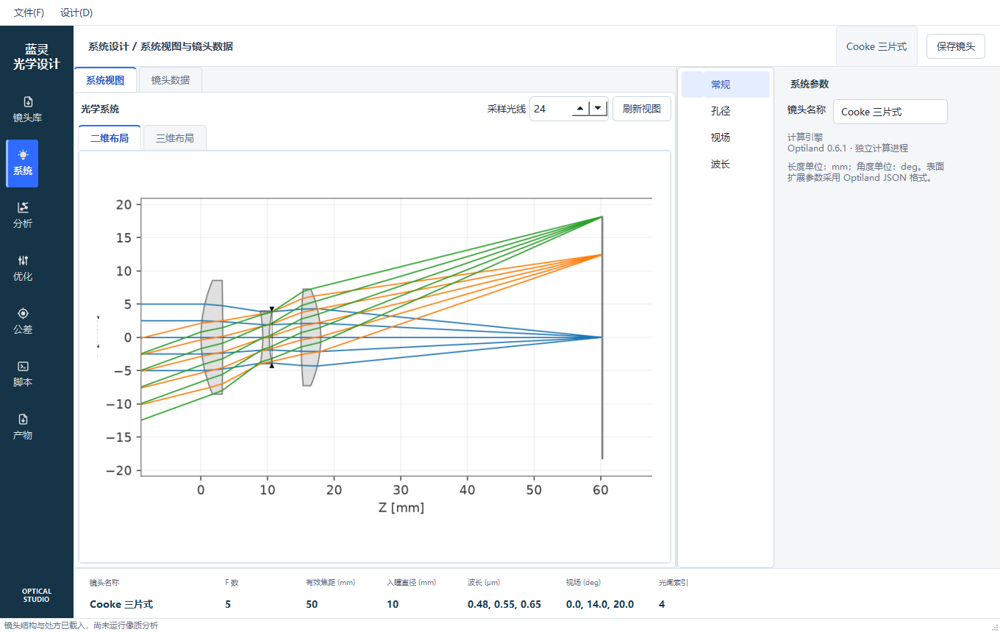
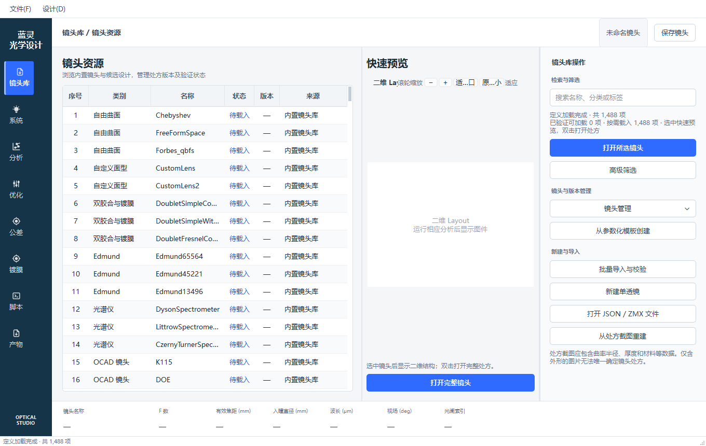
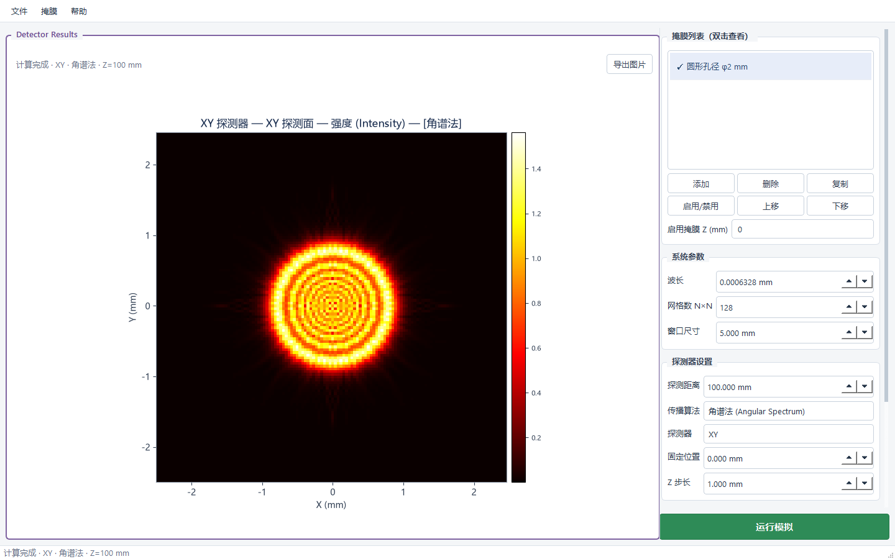

对话式 Agent 工作台
三栏任务工作区、专用设计 Agent、自定义模型服务商与附件理解，让设计意图直接连接可执行工具。
- 当前镜头与光场双向同步
- 子 Agent 与 59 个工具
- 任务文件与变更记录
蓝灵将 AI Agent、镜头设计与光场调控整合到同一工作台。从初始结构到分析、优化、公差、相位设计与设计报告，两个独立光学模块均可由 AI 直接调配，让每一步都有据可查。

不是彼此孤立的工具集合，而是镜头、任务、Agent 与设计产物之间的完整协作链路。
三栏任务工作区、专用设计 Agent、自定义模型服务商与附件理解，让设计意图直接连接可执行工具。
基于真实光学计算，覆盖镜头编辑、像质分析、有界优化、公差评估与镀膜分析，保留可复核的完整处方。
真实镜头资源、候选设计、参数化模板和版本历史集中管理，让已有结构成为下一次设计的起点。
与镜头设计数据模型独立，面向相位、振幅与自由空间传播任务，为 AI 提供专门的计算工具。
光学设计与光场调控作为两个独立模块运行，未来将持续接入镀膜设计、照明分析等更多专业应用。
光学计算由真实物理引擎执行，结果包含数值摘要、图件与可复核数据；演示图片不替代实际计算。

1,488 条镜头定义一次性完整列出，已有缓存直接恢复，其余条目在预览或打开时按需实例化。像质分析始终由用户或 Agent 显式触发。
复杂表面、视场与波长配置，布局、点列图、光线扇、PSF、MTF、畸变与场曲。
9 种优化方法、变量边界、多评价目标、灵敏度、蒙特卡罗采样与补偿器。
薄膜叠层光谱 / 角度响应分析；处方截图转录、核对后由真实引擎重建。
与镜头设计数据模型保持独立，面向相位、振幅与自由空间传播任务。多掩膜位置联动、四种传播算法、五种探测器均可由 AI 直接调配；XY 等比例显示，XZ/YZ 使用独立切片比例。

从任务发起到最终报告，镜头结构、计算结果和文件产物始终保留在同一工作链路中。
从镜头库、JSON / ZMX、初始结构或处方截图开始。
按需选择像质项目、优化变量、评价目标和公差配置。
比较处方差异，保存候选，审核状态并保留完整历史。
归档镜头文档、数值数据、图件与详实设计报告。
下载 1.81 MiB 在线安装版。安装器会自动配置独立 Python、光学计算引擎和必要运行依赖，不修改系统 Python。
Windows 10 / 11 64 位 · 安装过程需要联网 · 无需管理员权限23B56F8C138C54844E5D4641DC148AC2E346B6971AE2D641FADC13757B2D9791
关于运行环境、数据目录与模型配置的常见问题。
安装包包含蓝灵程序、界面资源和镜头库。体积较大的 Python、Qt、光学计算引擎与科学计算依赖在安装时从官方来源或镜像下载，因此安装过程需要联网。
不会。蓝灵使用应用目录中的独立 Python，默认安装到当前用户目录，无需管理员权限，也不修改系统 Python 配置。
用户任务与配置默认保存在 %APPDATA%\BlueSpirit，程序安装在 %LOCALAPPDATA%\BlueSpirit。卸载不会主动删除用户任务、报告与镜头版本数据。
不自带。蓝灵支持自定义 OpenAI 兼容服务商，API Key 由用户在本机设置。没有 API Key 时，基础界面和本地光学计算仍可使用。